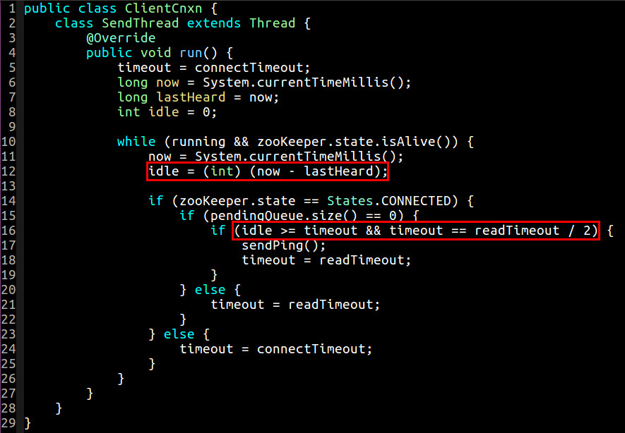
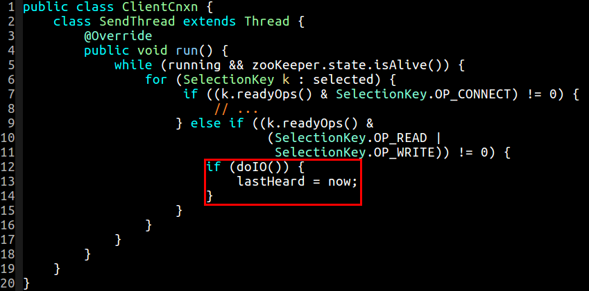
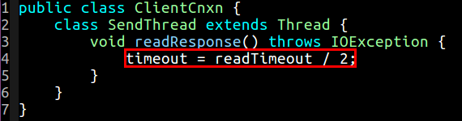
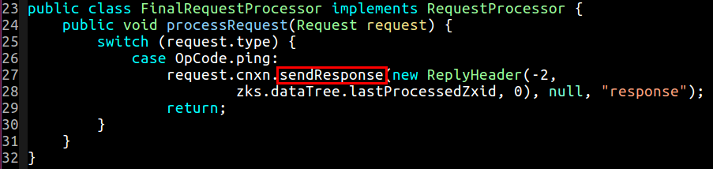
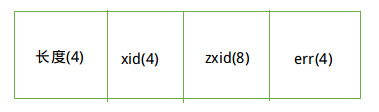
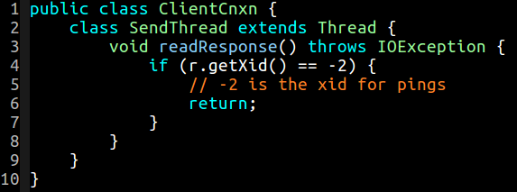

在客户端与服务器建立连接之后，那么接下来客户端就开始不停地对服务器发送 Ping, Ping, Ping 心跳包检测了。当空闲时间 idle 超过 timeout 时间的时候，将会调用 sendPing 方法，默认情况下大概是 2 秒钟发送一次:

lastHeard 是上一次读写操作的时间，是在进行完 doIO 操作之后进行的:

当发送完 Ping 包之后，timeout 时间被重置为 readTimeout 时间，当读取到来自服务器的响应的时候，timeout 又被重置为 readTimeout 时间的一半，这个时候又可以发送心跳包了:

sendPing 方法送入一个 Packet 到 outgoingQueue 队列，发送的数据格式如下:
与此相对应，服务器端的 FinalRequestProcessor 收到类型为 OpCode.ping 的请求之后，便会发送一个响应过去:

数据格式如下:

客户端在收到 ping 的响应之后直接丢弃掉:
